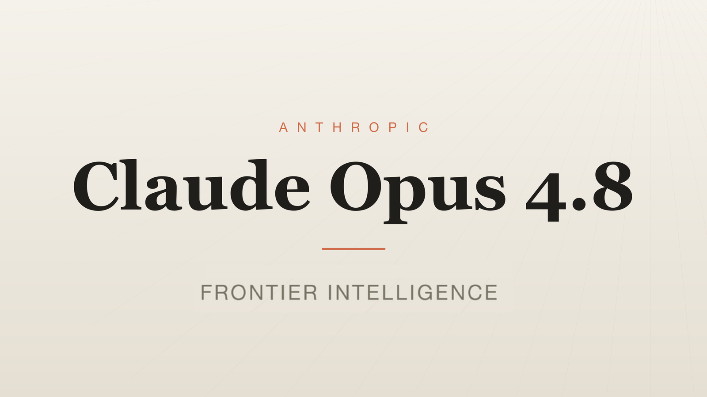

Small, self-contained Python scripts that demonstrate real Claude Opus 4.8 capabilities on the Anthropic Messages API.

pip install -U anthropic (tested against 0.105+)
export ANTHROPIC_API_KEY=sk-ant-...
claude-opus-4-8.
Each script is a single file. Run it and watch the behavior (and the token accounting) in real time.
Same model, same prompt — turn the effort dial from low to max and watch output tokens rise.
Inject mid-conversation instructions as system messages without destroying your prompt cache prefix.
Test whether the model pushes back on confident-but-wrong claims or caves under pressure.
Run the exact same prompt on the exact same model at every effort level. The only thing that changes is output_config={"effort": "..."}.
Output tokens (and quality) scale with the effort setting. You don’t switch models — you turn a dial. high is the default. xhigh and max are Opus-tier only.
python3 effort_demo.pyIt loops over ["low", "medium", "high", "xhigh", "max"], calls the model with thinking={"type": "adaptive"} + the chosen effort, and prints the answer plus input/output token counts.
You’ll see output length (and usually depth) increase as effort goes up — all on the identical base model.
How do you give new instructions to a long-running agent without blowing away your expensive prompt cache?
Put the new instruction as a {"role": "system"} entry inside the messages array. The top-level system (the cached prefix) stays byte-identical.
python3 cache_safe_system_injection.pyThe gap between 2a and 2b is the real cost of cache invalidation in production agents. Requires a Claude 4+ model.
Frontier models can be sycophantic. This script probes native behavior with no system prompt coaching.
python3 disagreement_probe.pyThe script prints both the model’s answers and the token usage. Look for whether it confidently agrees with provably false statements or stands its ground under pressure.
max_tokens and effort modest while experimenting. Token costs add up quickly on the higher effort tiers.